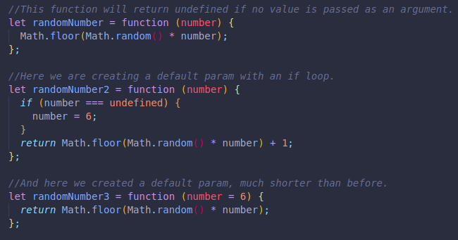
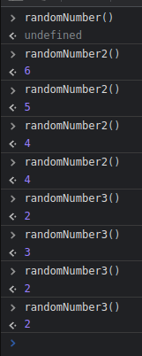
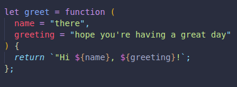
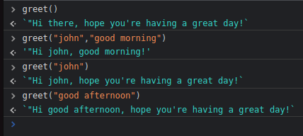

Default Parameters
We can set a default parameter for our functions, just in case the user
does not select any option.
-
Here we see no default, which will return undefined every time we don't
pass in a value.
- Then we use an if loop for the default value.
- And finally we use the default param syntax, no loops.


Another example:

